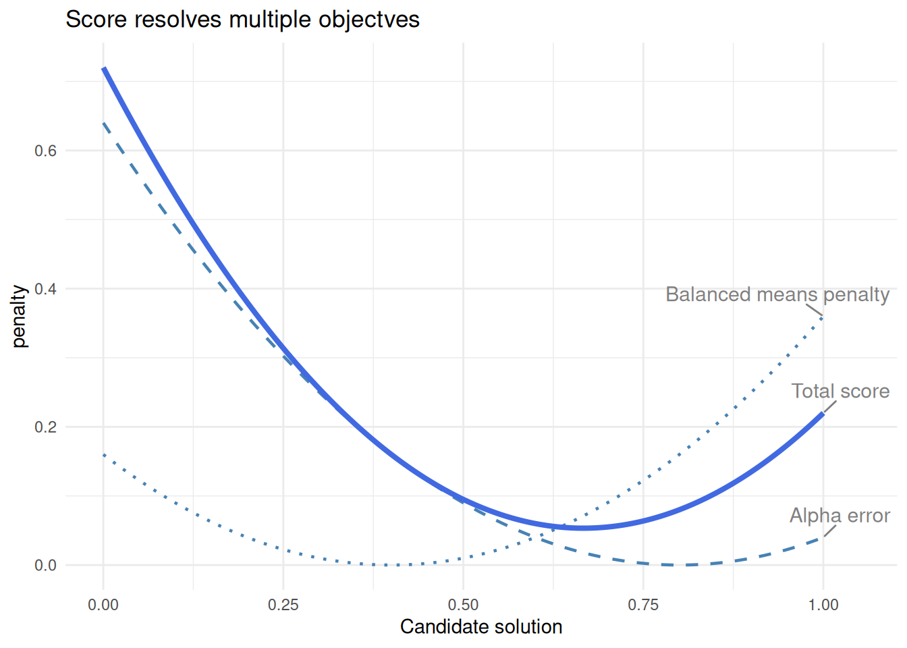
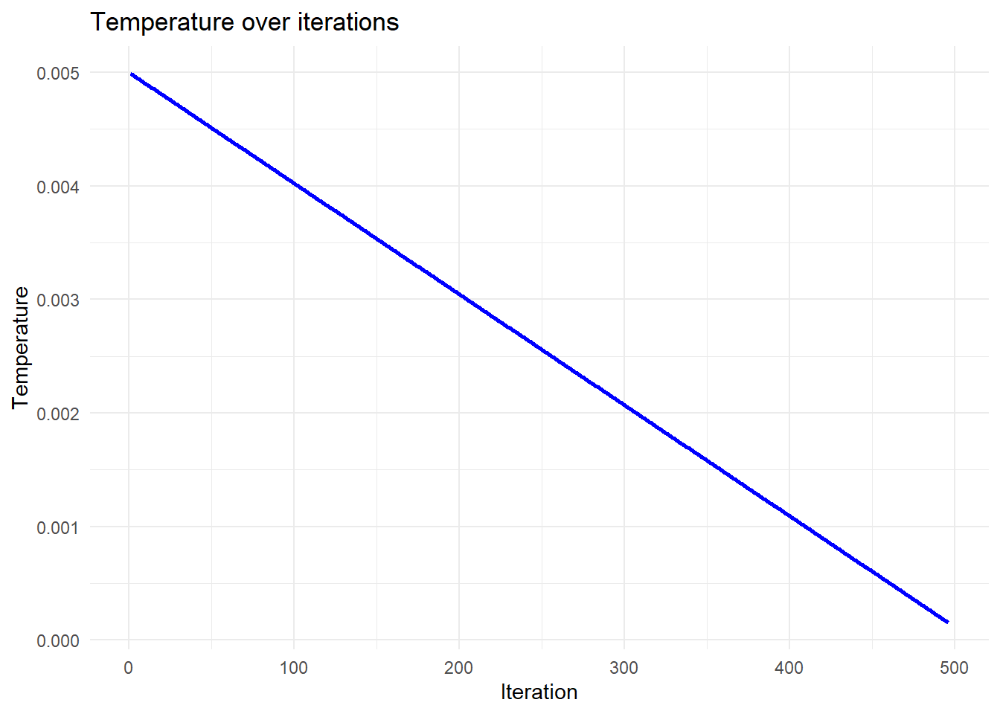
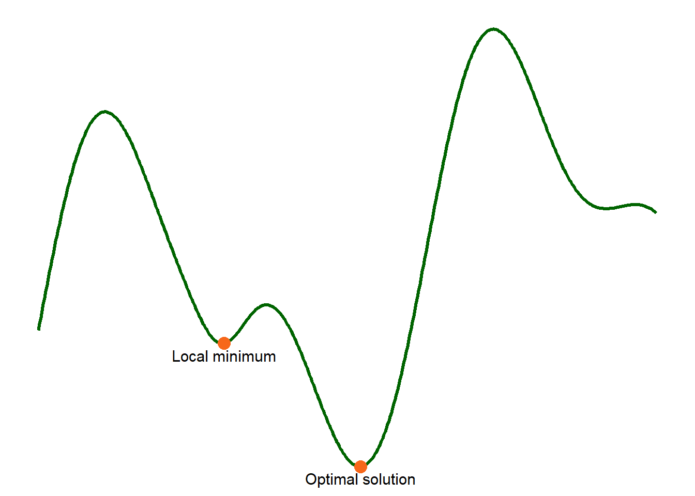
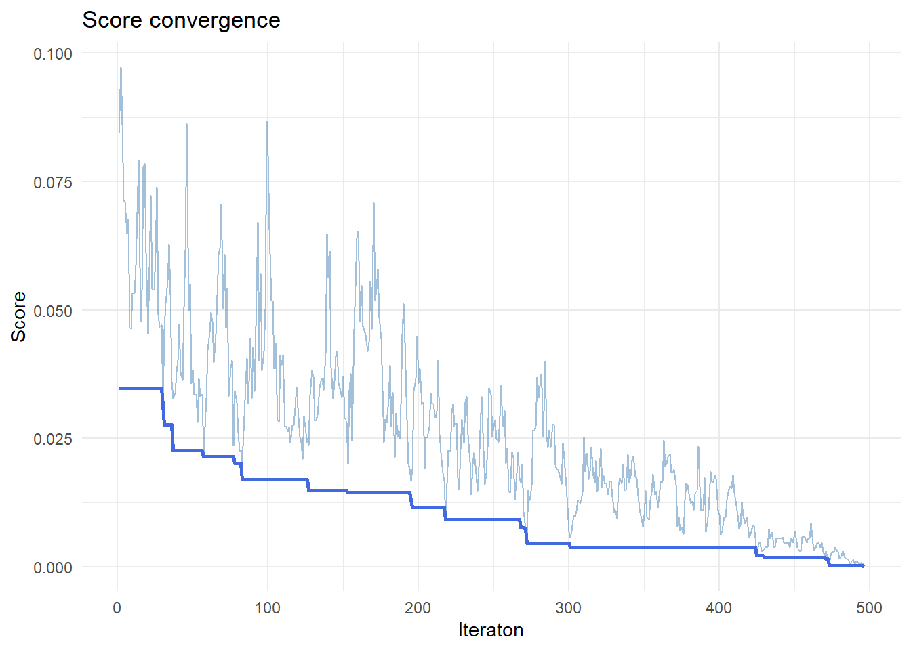
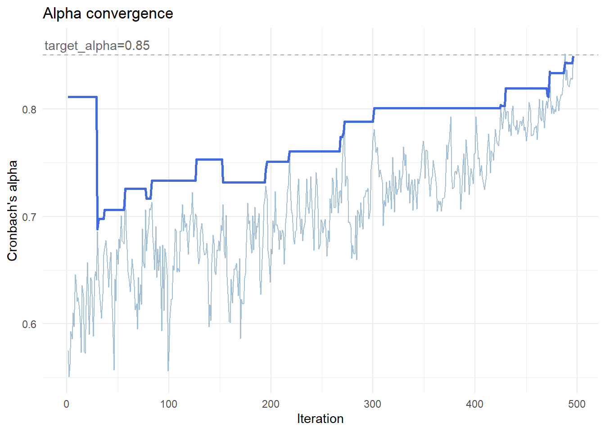

makeItemsScale() explainer: Reconstructing Item-Level Data with a Target Cronbach’s Alpha
Source:vignettes/makeItemsScale_explainer.qmd
Summary
Researchers often work with summated rating scales, where multiple items are combined into a single score. In some situations, it is useful to reverse this process: to generate item-level data that reproduce a given scale while also exhibiting a desired level of internal consistency, typically measured by Cronbach’s alpha.
This is not a straightforward task. Many different combinations of item values can produce the same total score, but only a small subset will yield the required reliability. The makeItemsScale() function addresses this problem by generating candidate datasets and iteratively refining them to match a target alpha while preserving the original scale values.
The approach combines a carefully designed scoring function with a stochastic optimisation method known as simulated annealing. Together, these allow the algorithm to explore a large space of possible solutions and converge on datasets with realistic and controlled properties.
Quick example:
The short dataset in Table 1 shows a four-item 5-point Likert scale, myScale for which we want to produce scale items that match the scores in the dataset and have Cronbach’s alpha of 0.80. This result is achieved in the four columns, V1 ... V4 which average to equal the corresponding values in myScale.
Show the code
## set parameters
set.seed(42)
n <- 16
lower <- 1
upper <- 5
k <- 4
means <- runif(n = k, min = 2.25, max = 3.75)
sds <- runif(n = k, min = 0.7, max = 1.2)
target_alpha <- 0.8
## correlation matrix
r_mat <- makeCorrAlpha(items = k, alpha = target_alpha)
df <- makeScales(
n = n, means = means, sds = sds,
lowerbound = lower, upperbound = upper, cormatrix = r_mat
)Variable 1 : item01 - Variable 2 : item02 - Variable 3 : item03 - Variable 4 : item04 -
Arranging data to match correlations
Successfully generated correlated variablesShow the code
| item01 | item02 | item03 | item04 | X1 | X2 | X3 | X4 | summated_scale |
|---|---|---|---|---|---|---|---|---|
| 2 | 3 | 3 | 3 | 2 | 3 | 3 | 3 | 11 |
| 2 | 3 | 2 | 3 | 3 | 2 | 3 | 2 | 10 |
| 5 | 3 | 5 | 4 | 5 | 4 | 4 | 4 | 17 |
| 3 | 4 | 2 | 3 | 3 | 2 | 4 | 3 | 12 |
| 4 | 5 | 4 | 5 | 4 | 4 | 5 | 5 | 18 |
| 3 | 3 | 1 | 3 | 3 | 2 | 3 | 2 | 10 |
| 5 | 4 | 3 | 3 | 3 | 4 | 4 | 4 | 15 |
| 4 | 4 | 3 | 3 | 3 | 4 | 3 | 4 | 14 |
| 4 | 3 | 2 | 3 | 5 | 2 | 2 | 3 | 12 |
| 4 | 4 | 2 | 4 | 3 | 4 | 3 | 4 | 14 |
| 2 | 2 | 1 | 3 | 2 | 2 | 2 | 2 | 8 |
| 4 | 4 | 3 | 3 | 4 | 4 | 3 | 3 | 14 |
| 4 | 2 | 2 | 4 | 3 | 3 | 3 | 3 | 12 |
| 5 | 5 | 4 | 5 | 5 | 5 | 5 | 4 | 19 |
| 4 | 5 | 3 | 3 | 3 | 5 | 4 | 3 | 15 |
| 3 | 4 | 3 | 4 | 4 | 3 | 4 | 3 | 14 |
Here, the resulting Cronbach’s alpha = 0.8066, so the synthetic data are correct to two decimal places. Not bad for just 16 observations! (Actually, number of observations has little to do with alpha)
Note also that the makeItemsScale() function does not exactly reproduce the original scale items. It simply produces a plausible set of items that reproduce the same summated scale along with the target Cronbach’s alpha.
The Goal: Matching a Target Cronbach’s Alpha
Cronbach’s alpha is a widely used measure of internal consistency. It reflects how closely related a set of items are as a group.
At a high level:
- High alpha → items behave similarly
- Low alpha → items behave more independently
The challenge that makeItemsScale() deals with is:
Given a set of row totals, reconstruct item-level data such that:
- Row sums are preserved
- The resulting dataset has a desired alpha
These constraints make the problem non-trivial.
From Scale to Items
Suppose we observe a total score of 12 for a respondent, using a 4-item scale with values from 1 to 5.
There are many ways to construct such a row:
All satisfy the same row sum.
The key insight: row sums alone do not determine item structure
The function begins by generating candidate combinations that satisfy these constraints.
The Core Challenge
Although many datasets satisfy the row sums, very few will produce the desired Cronbach’s alpha.
This creates a large search problem:
- Many valid solutions
- Few desirable ones
To navigate this space, we need:
- A way to evaluate solutions
- A way to search efficiently
The Score Function: What “Good” Looks Like
To guide the search, we define a score function:
where:
- is a relative weighting coefficient
Lower values for indicate better solutions.
measures how evenly the item means are distributed.
- Lower values indicate more similar item means
- Higher values indicate imbalance across items
Component 1: Matching the target alpha
- Measures deviation from the desired reliability
- Squared to penalise larger errors
Component 2: Balancing item means
- Encourages similar item means
- Avoids unrealistic item distributions
Competing objectives
These components may favour different solutions.

Interpreting the score function in Figure 1
- Alpha error is minimised at one point
- Balance penalty at another
- The final score is a compromise
The algorithm solves a multi-objective optimisation problem
In Figure 1, the horizontal axis (“candidate solution”) represents a range of possible datasets that the algorithm might consider. Each point corresponds to a different arrangement of item values, with varying levels of reliability and balance. The vertical axis shows the penalty assigned by each component of the score function.
The curves illustrate how different criteria favour different solutions. The alpha error is lowest where the dataset is closest to the target Cronbach’s alpha, while the balance penalty is lowest where item means are most evenly distributed. These preferred solutions do not coincide. The total score combines both components, producing a compromise that reflects the relative weighting of each objective.
In practice, the algorithm moves through many such candidate solutions, using the score to evaluate their quality and guide the search toward an optimal balance.
Simulated Annealing: How We Search
Once we can evaluate solutions, we need a way to find good ones.
The problem with greedy search
A simple strategy:
Always accept improvements
A “greedy search” makes small changes and accepts every improvement, rejecting any changes that do not improve the configuration. An earlier version of the makeItemsScale() function did just this. It was fast, but often failed to converge to give the desired alpha value because the algorithm was trapped in a local minimum solution.
The idea of simulated annealing
Simulated annealing allows occasional “worse” moves.
- Early: explore widely
- Later: refine carefully
Temperature
At each step, worse moves are accepted with probability:
where:
- = how much worse the new solution is
- = temperature
What this means
High temperature
- is large
- is small
Worse moves are often accepted
Low temperature
- is small
- is large
Worse moves are almost never accepted
- High temperature → more exploration
- Low temperature → more selective
Temperature decreases over time:
Temperature “cools” over time
In this function, temperature starts at an initial value , and gradually decreases:

Visual intuition

Think of a landscape as in Figure 3:
- Valleys = good solutions
- Shallow valleys = local minima
- Deepest valley = optimal solution
A greedy search gets stuck.
Simulated annealing can escape and find better regions.
Types of Moves
The algorithm modifies rows while preserving row sums.
Redistribution
- One value increases
- Another decreases
Swap
- Values exchanged
- No change in distribution
Key constraint
Row sums are always preserved
This ensures consistency with the input scale.
How It All Works Together
At each iteration:
- Propose a change
- Compute the score
- Accept or reject based on temperature
The score defines the landscape; simulated annealing explores it.
What the Algorithm Looks Like in Practice
We can track the algorithm over time.
Temperature
- Decreases steadily
- Controls exploration
Score

As we see in Figure 4:
- Noisy early
- Stabilises over time
The lighter line shows the current value for score at each iteration. The heavy line shows the best value achieved so far, improving steadily over time.
Early iterations have wide variation, reflecting exploration with high temperature. Later iterations have lower temperature and reduced variation.
Alpha
Figure 5 shows that over time, alpha:
- Fluctuates early
- Converges toward target
Convergence Toward Target Alpha

The lighter line shows the current alpha, which fluctuates as the algorithm explores different configurations. The darker line tracks the best solution found so far, improving steadily over time.
Early iterations are volatile, reflecting exploration. Later iterations stabilise as the algorithm refines the solution.
This transition from exploration to refinement is the defining feature of simulated annealing.
Extensions
The score function can be extended to include:
- variance constraints
- distribution shape
- additional structural properties
However:
More constraints make optimisation harder
Summary
- The problem is to reconstruct item-level data from scale totals
- The score function defines what “good” means
- Simulated annealing enables effective search
- The result is a flexible, realistic dataset with controlled reliability